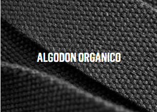

Diseñado a partir de una de las
plantas de más rápido
crecimiento en el mundo, el bambú
molido por CNC proporciona a
nuestros diseños un aspecto moderno
basado en un recurso natural
altamente renovable y fácil de
mantener. Producido utilizando un
proceso de carbono positivo, el
bambú tiene una mayor
resistencia a la compresión que
la madera y una resistencia a la
tracción que rivaliza con el acero.

El algodón orgánico se cultiva sin fertilizantes químicos,
pesticidas e insecticidas, todos los cuales transportan toxinas
que pueden dañar el medio ambiente circundante. La agricultura
orgánica también requiere un uso significativamente menor de
agua. Confiamos en el algodón orgánico como componente de
nuestro tejido REWIND ™, que se utiliza para nuestros productos
blandos y otras aplicaciones de tejidos.
Utilizamos acero inoxidable por su impacto ambiental mínimo y su
durabilidad duradera. Este material no solo no se corroe, oxida
o mancha fácilmente cuando se expone al agua, sino que
finalmente es 100% reciclable. Usamos acero inoxidable en la
arquitectura de nuestros auriculares y como sujetadores para
juntas.
La utilización de aluminio reciclable, un metal eficientemente
reutilizable, reduce significativamente la cantidad de material
que ingresa a la corriente de desechos. El proceso de reciclaje
de aluminio ha existido a gran escala, dentro de las comunidades
y a escala industrial, durante más de 50 años, ahorrando energía
y reduciendo masivamente la minería global. El aluminio reciclable
se puede encontrar en nuestros platos giratorios, carcasas para
auriculares y auriculares.

Construido combinando derivados de madera y fibras plásticas,
el compuesto de madera da como resultado un producto más duradero.
El proceso de composición exige mucha menos energía que la industria
maderera. El compuesto de madera se destaca como un componente de
diseño duradero y atractivo en nuestras cajas de altavoces.
Renovable, biodegradable y 100% natural, nuestro corcho orgánico
se obtiene a través de un proceso de recolección ecológico que
garantiza la vida continua del árbol. Este material innovador y
ecológico se utiliza no solo como elemento de diseño, sino a lo
largo de todo nuestro proceso de producción.
Nuestro tejido REWIND ™ está tejido con materiales reciclados
para crear un producto duradero y de alta calidad. Está construido
con una mezcla distintiva de 30% de algodón orgánico recuperado,
30% de cáñamo recuperado y 40% de PET reciclado. Encontrará tela
REWIND ™ en toda nuestra línea, que incluye desde envolturas para
auriculares y carcasas, hasta bolsas para guardar y bandas para
relojes.
Nuestros geles para los oídos están hechos de silicona no
tóxica de grado médico para ayudar a refutar gérmenes.
Utilizamos silicona no implantable para componentes que tienen
contacto directo con la piel. La silicona es un gran material
para usar, ya que puede regenerarse fácilmente en nuevas
formas y usos.
Los metales reciclables pueden transformar los productos en un
recurso renovable en los próximos años. Nuestra dedicación al
uso de este material conserva elementos naturales, ahorra energía
y contribuye a una fabricación más limpia, lo que resulta en
menos desechos mineros y uso de agua. Los metales reciclables se
incorporan a nuestro hardware a través de auriculares, hebillas,
deslizadores, carcasas de relojes y otros adornos.
El cuero es un material natural duradero que se utiliza
como correas de transporte para nuestras carcasas de altavoces.
El cuero ofrece un detalle de diseño cálido y rico y puede
biodegradarse en una fracción del tiempo que lleva otros
materiales estructurales.

Los bosques FSC® se manejan teniendo en cuenta el medio ambiente,
garantizando que los árboles cosechados serán reemplazados y
regenerados de forma natural. Los bosques certificados FSC® se
han ganado su reputación de credibilidad ambiental, protección,
silvicultura saludable, compromiso social y prevención de la
forestación ilegal. Es por eso que utilizamos madera certificada
FSC® para la carcasa de los auriculares y ciertos elementos de
diseño. FSC®N002016

Nuestros geles para los oídos están hechos de silicona no
tóxica de grado médico para ayudar a refutar gérmenes.
Utilizamos silicona no implantable para componentes que
tienen contacto directo con la piel. La silicona es un
gran material para usar, ya que puede regenerarse
fácilmente en nuevas formas y usos.
El reciclaje de plástico conserva los recursos naturales,
ahorra energía, reduce el espacio de los vertederos y
disminuye la contaminación en las fuentes de aire y agua,
al tiempo que limita la creación de materiales no biodegradables.
Utilizamos plástico reciclado en todas las cajas de altavoces y
auriculares, así como en las bandejas de embalaje.
El papel reciclado está compuesto de material recuperado del
flujo de residuos. Su uso reduce la demanda general de madera
cosechada y la cantidad de papel que llega a los vertederos.
En nuestra misión de apoyar la sostenibilidad, utilizamos papel
reciclado para el embalaje de nuestros productos.

El PET reciclado se crea transformando plástico y puede combinarse con otros
materiales. Hecho en gran medida con botellas de plástico,este activo limita
el crecimiento de los vertederos y el dañoambiental al suelo y las vías
fluviales de la tierra. El PET recicladoes el componente más grande de nuestro
exclusivo tejido REWIND ™,que se utiliza en carcasas de auriculares y estuches,
bolsas de almacenamiento y bandas de reloj.